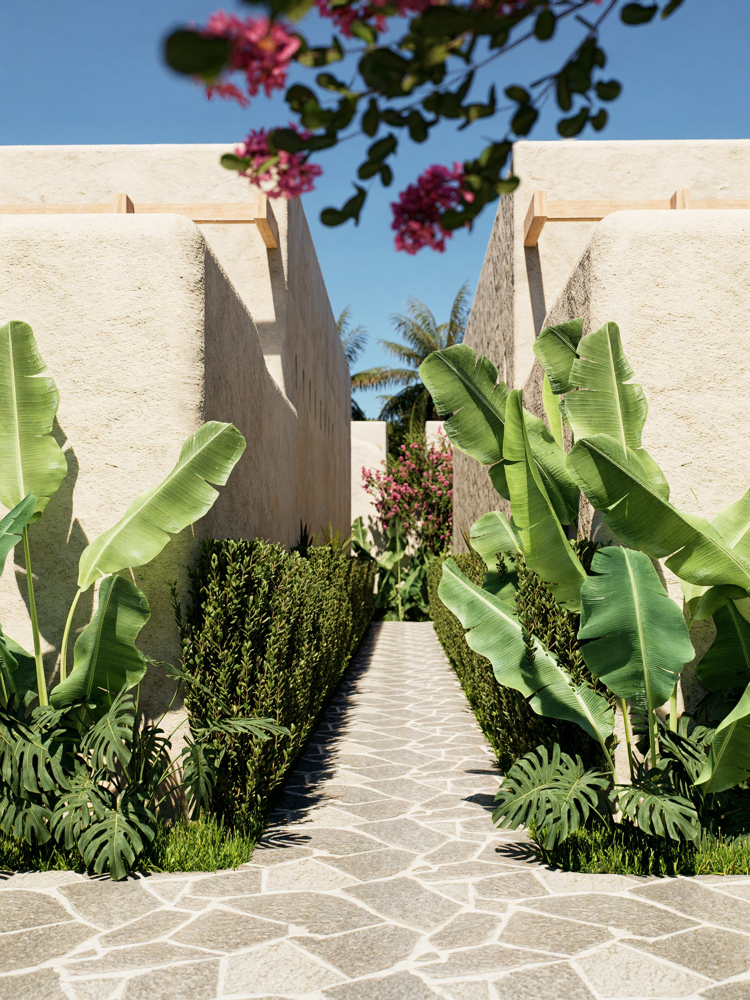
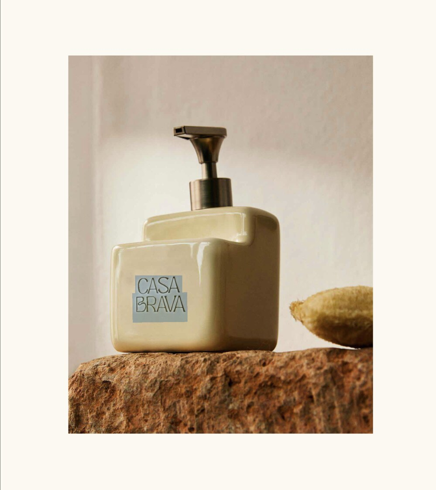
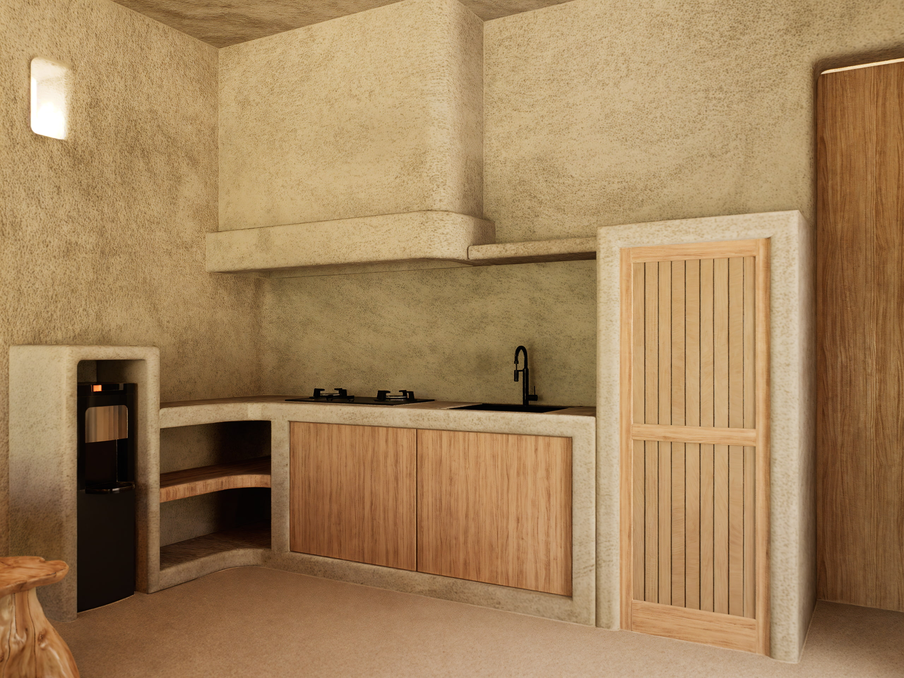
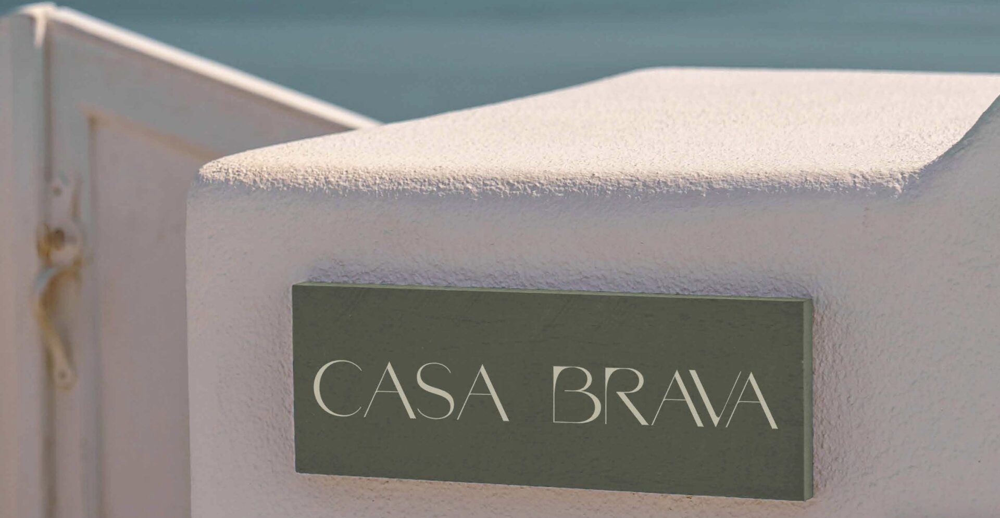
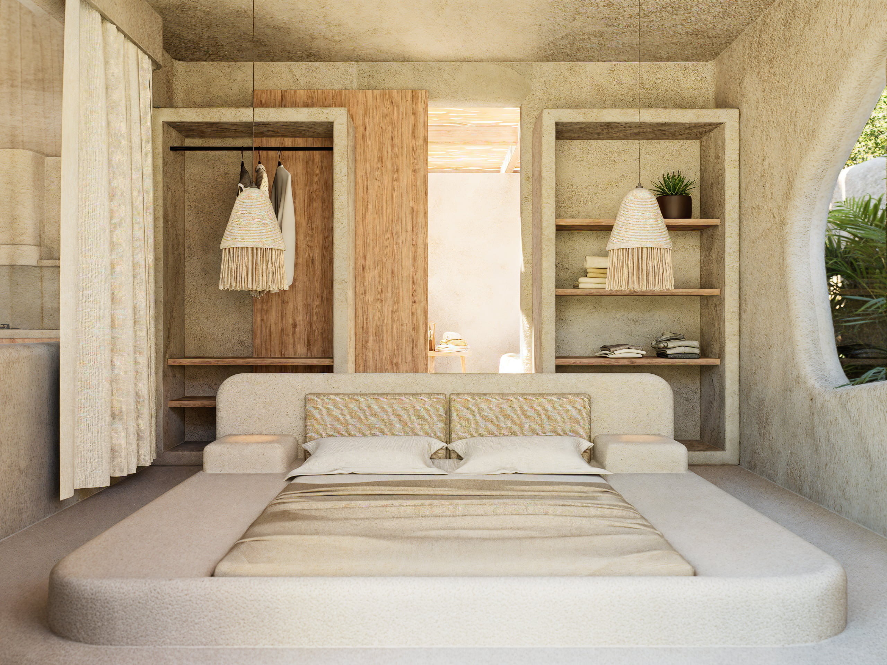

Sobre Casa Brava
Kuta Mandalika, Lombok Una casa pensada para dos que acabó siendo un hotel de ocho villas.
No queríamos otro hotel. Queríamos una forma distinta de estar en un sitio.
Todo empezó con la idea de dejar Kuta Mandalika tal como la encontramos y construir sin discutir con el paisaje. La idea inicial era pequeña. El terreno que acabamos comprando, no tanto.
Un terreno en Lombok, cuatro cafés al día y ninguna prisa por terminar.
No hubo un plano cerrado desde el primer día: hubo visitas de obra, café de sobra y ganas de acertar antes que de terminar rápido. Nuestra primera inversión en la isla, construida despacio y a mano, para que durara.
No hay nada aquí que no elegiríamos para nuestra propia casa.
Queríamos una casa para nosotros. Acabamos construyendo un lugar para compartir.
Lo que empezó como un terreno para nuestra propia casa se convirtió en el proyecto más grande que hemos construido: ocho villas pensadas para que otros vivieran exactamente lo que nosotros buscábamos.
Todo lo que toca la piel viene de la isla.





